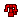

恐暴龙的黑鱗 | 怪物猎人双十字
恐暴龙的黑鱗 - 【MHXX】怪物猎人双十字
| 名称 | 恐暴龙的黑鱗 色ょうぼうりゅう的こくりん |
||||
|---|---|---|---|---|---|
| 稀有度度 | 6 | 所持 | 99 | 売値 | |
| 素材 | 評価値 | 2 | |||
| 説明 | 恐暴龙的绿がかった黑い鱗。希少之素材だが、不吉与して行商があまり扱いたがら之い。 | ||||
| [入手] ふらっ与 猎人 |
[ふら] 上位高难度★6恐暴龙的根据地 1个 45% [ふら] G级高难度★4暴飲暴食要小心 2个 8% |
| [入手] 随从猫任务 怪物报酬 |
[モン] [上位] 全部 恐暴龙 [乱入] 1个 |
| [入手] 剥取 部位破坏 |
[上位] 恐暴龙 个体剥取 4回 39% [上位] 恐暴龙 尾巴剥取 2回 32% [上位] 恐暴龙 フリー狩猎 1个 10% [G级] 恐暴龙 フリー狩猎 2个 8% [上位] 极度饥饿恐暴龙 个体剥取 4回 25% [上位] 极度饥饿恐暴龙 尾巴剥取 2回 26% [上位] 极度饥饿恐暴龙 フリー狩猎 1个 12% |
| [入手] 任务报酬 |
[主任务] 村★10占领遗群岭的恐暴龙 36% [副任务] 村★10占领遗群岭的恐暴龙 36% [主任务] 村★10吞噬一切的暴食者 36% [副任务] 村★10吞噬一切的暴食者 36% [主任务] 集★6恐暴龙的根据地 36% [副任务] 集★6恐暴龙的根据地 36% [副任务] 集★6雌狗龙清扫作战 10% [主任务] 集★7最恐怖的战斗狂组合 36% [主任务] 集★7遗迹平原寄来的信 10% [主任务] 集★7憤怒的雄叫び 2个 12% [主任务] G★4恐暴龙的狩猎 2个 8% [副任务] G★4恐暴龙的狩猎 2个 8% [主任务] G★4暴飲暴食要小心 2个 8% [副任务] G★4暴飲暴食要小心 2个 8% [主任务] G★4感动发生的瞬間 2个 8% [副任务] 【特殊许可】红盔狩猎委托９ 2个 12% [主任务] 配信★常世貪る恐暴龙 2个 12% [主任务] 配信★幻譚～貪食的恐王 10% [主任务] 配信★そ的怒り、制止不能 2个 12% [主任务] 配信★狂气与破坏的化身 2个 12% [主任务] 配信★狩人的頂 2个 4% [主任务] 配信★四天王与暴喰的王 4% [主任务] 配信★ストライダー飞龙・冰海任務 2个 12% |
| [用途] 武器 |
 愤怒双刀2 [强化] 4个 愤怒双刀2 [强化] 4个  混沌之锤2 [强化] 4个 混沌之锤2 [强化] 4个 悲哀的重鎗 [生产] 6个  愚欲铳枪2 [强化] 3个 愚欲铳枪2 [强化] 3个  业弩黑暗狂乱 [强化] 6个 业弩黑暗狂乱 [强化] 6个  业重弩饥荒 [强化] 4个 |
| [用途] 防具生产 |
 残忍头盔 [生产] 2个 残忍头盔 [生产] 2个  斉天ノ添发・真 [生产] 4个 斉天ノ添发・真 [生产] 4个  残忍R铠甲 [生产] 6个 残忍R铠甲 [生产] 6个  斉天ノ衣・真 [生产] 2个 斉天ノ衣・真 [生产] 2个  恐暴龙腕甲 [生产] 6个 恐暴龙腕甲 [生产] 6个  残忍腕甲 [生产] 5个 残忍腕甲 [生产] 5个  恐暴龙腰甲 [生产] 6个 恐暴龙腰甲 [生产] 6个  恐暴龙Ｘ腰甲 [生产] 8个 恐暴龙Ｘ腰甲 [生产] 8个  恐暴龙重靴 [生产] 6个 恐暴龙重靴 [生产] 6个  残忍重靴 [生产] 5个 地上最強的袴 [生产] 3个 重靴オブ愤怒 [生产] 5个 重靴オブ阿娜特 [生产] 5个 残忍重靴 [生产] 5个 地上最強的袴 [生产] 3个 重靴オブ愤怒 [生产] 5个 重靴オブ阿娜特 [生产] 5个  斉天ノ具足・真 [生产] 4个 斉天ノ具足・真 [生产] 4个 |
| [用途] 防具强化 |
 墨镜 Lv7 [强化] 2个 墨镜 Lv7 [强化] 2个 |